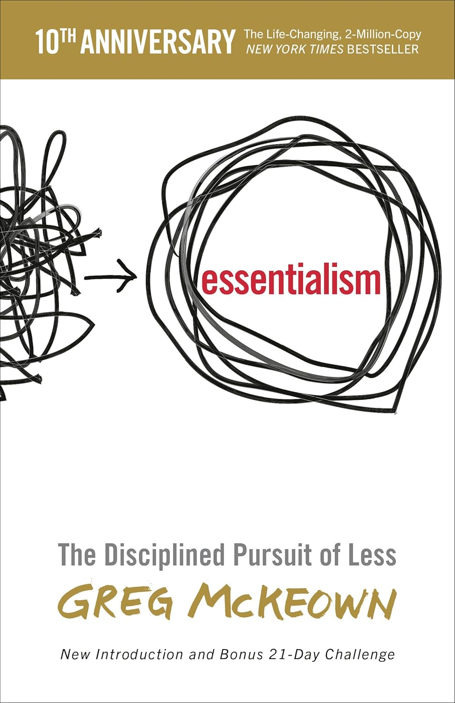

"Essentialism: The Disciplined Pursuit of Less"

- Read on 2026-03-06
- Rating: ️️️️️
- Format: 🎧 (6 hours 25 minutes)
I really liked this one. Essentialism is a mindset that shifts us from being acted upon by endless demands to consciously choosing what to act upon—focusing only on what is truly vital and letting the rest fall away. When we surrender our priorities to noise, expectations, or fear of missing out, we gradually give up the deliberate exercise of agency.
- Prior: Lincoln and His Admirals
- Next: James